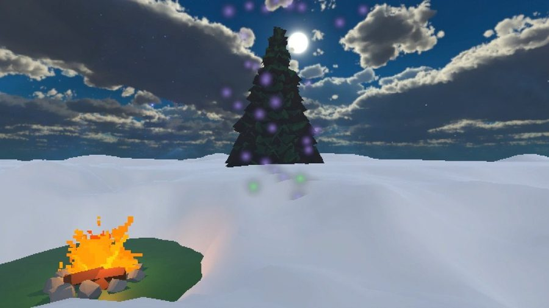
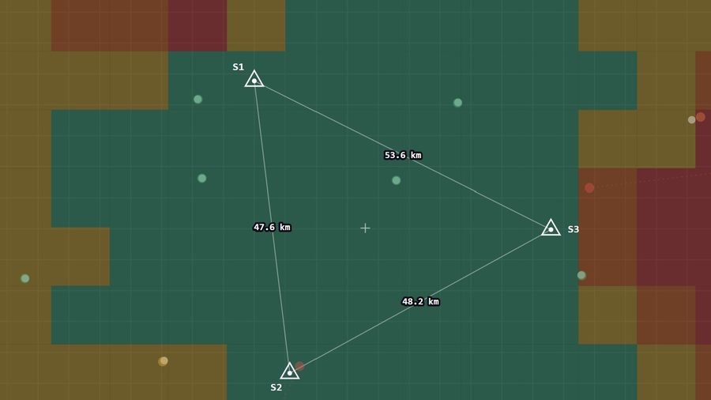
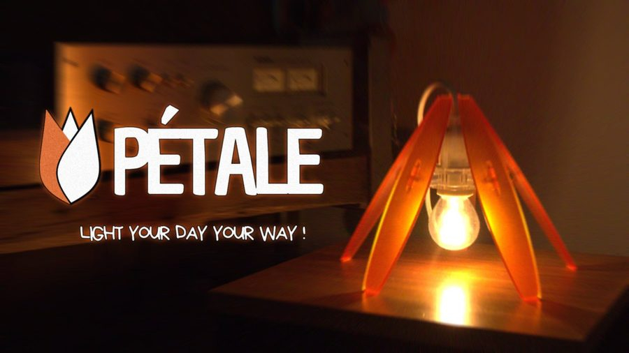

Projets
Applied Fox
Système multi-agents 100 % local pour la veille technologique R&D sous validation humaine stricte.

DÉCOUVRIR →
Forest of Senses
Environnement de rééducation motrice post-AVC piloté par un capteur isométrique à 5 doigts.

DÉCOUVRIR →
Bocage Digital Twin
Jumeau numérique d'un écosystème percheron pour concilier écologie et économie. Simulation interactive en ligne.

TESTER LA DÉMO →
Lightning TDoA
Simulation d'un réseau de détection de foudre VLF à 3 stations par multilatération hyperbolique.

TESTER LA DÉMO →
Pétale
Lampe modulaire en plaques d'acrylique thermoformées découpées au laser. Crowdfunding validé à 337 %.

DÉCOUVRIR →